MEAL — Multi-agent Environments for Adaptive Learning. A GPU-accelerated, fully JAX benchmark that trains agents on sequences of 100+ tasks in a few hours on a single GPU.
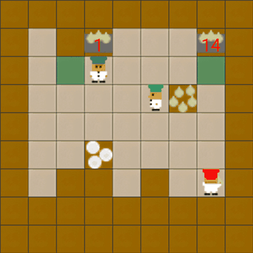
Much of existing CRL research evaluates on 3–10 tasks because CPU-bound simulators make longer runs impractical, and continual learning in cooperative multi-agent settings is largely unexplored. MEAL addresses both gaps and shows that long task sequences reveal failure modes that may not emerge at smaller scales.
The first benchmark for continual multi-agent RL, and the first continual-RL benchmark with hardware-accelerated execution.
Procedural task generation with scalable difficulty, yielding a near-infinite supply of uniquely solvable kitchen layouts.
Conclusions shift as sequences lengthen, and retaining cooperative behavior is a distinct challenge that worsens with more agents, harder tasks, and changing partners.
Every layout is generated on the fly and validated to be solvable, ensuring both agents can complete at least one cook–deliver cycle. The result is a near-infinite pool of unique, playable kitchens.
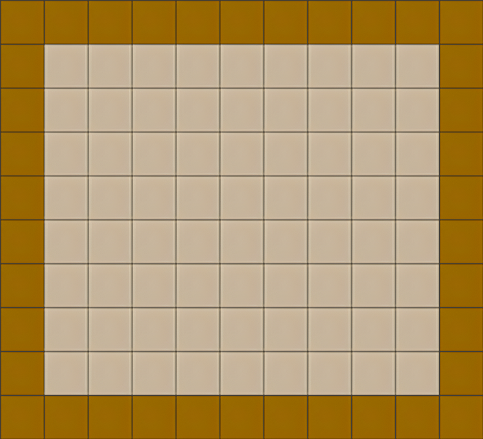
Draw an empty room with outer walls, sized from the difficulty range.
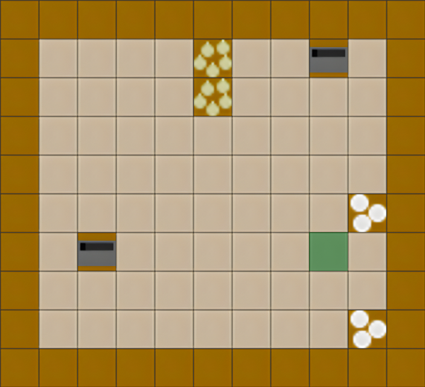
Inject the interactive tiles: onion pile, plate pile, pot, and delivery counter.
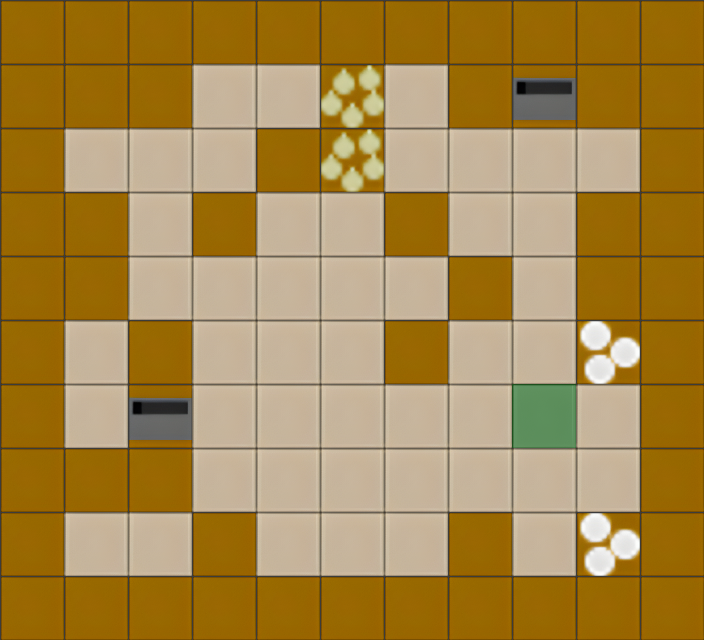
Add internal walls until obstacle density matches the target level.
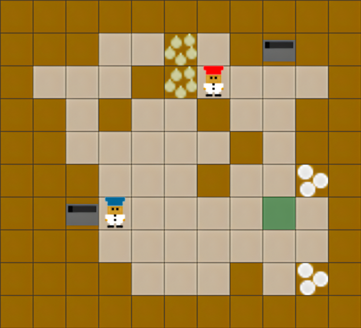
Drop in the chefs, then validate the layout, and prune unreachable tiles.
Bigger grids and denser walls mean longer paths, tighter chokepoints, and split kitchens, forcing agents from solo cooking into genuine division of labor.
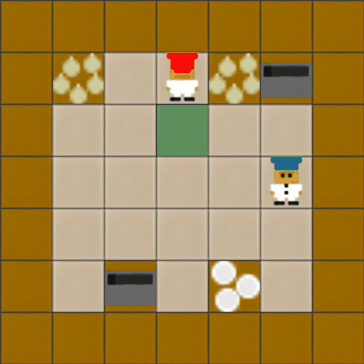
Compact layout. Ingredients, plates, and pots are close together. Agents can often finish the task solo, with little coordination.
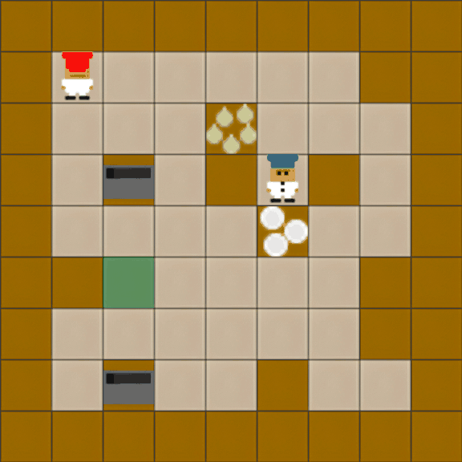
Stations spread out, paths lengthen, and the action sequences to cook and deliver grow harder to remember. Splitting the work starts to pay off.
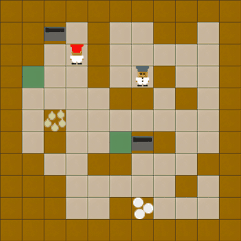
Long paths between stations. The kitchen is likely to split into separate zones, such that onions and plates must be passed across counters.
Although Overcooked is fully observable by design, MEAL introduces a partial observability variant. Each agent receives only an egocentric observation window, masking all tiles outside a fixed radius. Because the window size is fixed while the kitchen grows with difficulty, higher levels expose a smaller fraction of the grid — compounding the challenge of coordination and credit assignment.
Small kitchen (6–7 grid). The fixed observation window covers most of the layout — agents can usually infer the full state with a few steps.
Larger kitchen (8–9 grid). The window now covers a smaller proportion of the grid, requiring agents to navigate blind sections and coordinate without shared state.
Large, wall-dense kitchen (10–11 grid). The window covers only a narrow corridor of the layout. Agents must act on almost no global information, making credit assignment and long-term planning particularly hard.
Beyond changing layouts, MEAL exposes a second source of non-stationarity unique to multi-agent settings: changing cooperation partners. Rather than training on a fixed teammate, agents must adapt to a sequence of eight diverse partners, each with a different strategy, while retaining the ability to coordinate with earlier ones.
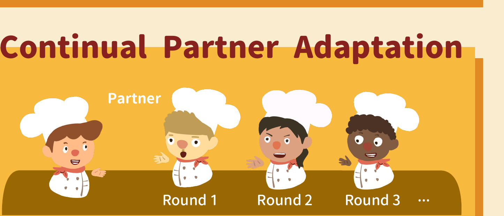
Partners are drawn from three pools: hardcoded strategies (random and static agents), planning-based agents (onion-only, plate-only, and a human-like planner with stochastic actions), and population-trained agents using Best-Response Diversity (BRDiv), which maximises self-play performance while minimising cross-play compatibility. Each partner is frozen; only the continual learner updates.
MEAL brings continual learning to four cooperative multi-agent environments from JaxMARL. We selected Overcooked for the core evaluation and analysis in our work. The other three cover different cooperative settings.
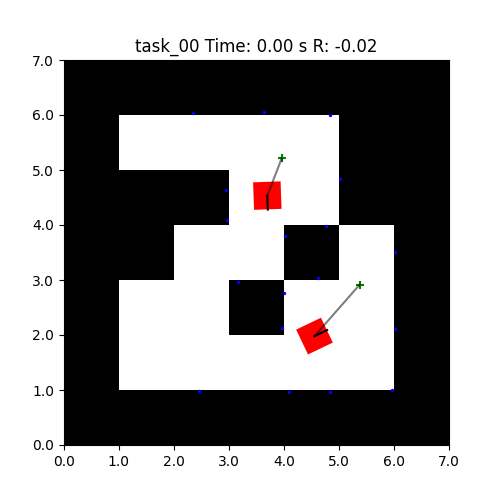
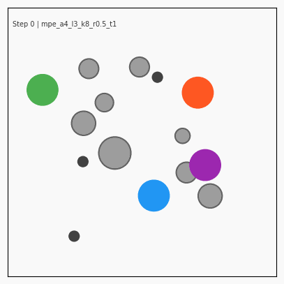
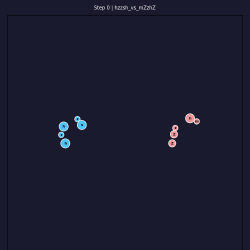
Raw delivery counts are not directly comparable across layouts of different sizes and complexities, so MEAL normalizes by the optimal single-agent cook–deliver cycle for each task.
Mean normalized soup delivery across all tasks at the end of training. Reflects the overall balance between stability and plasticity. Values above 1 indicate effective cooperation that exceeds solo efficiency.
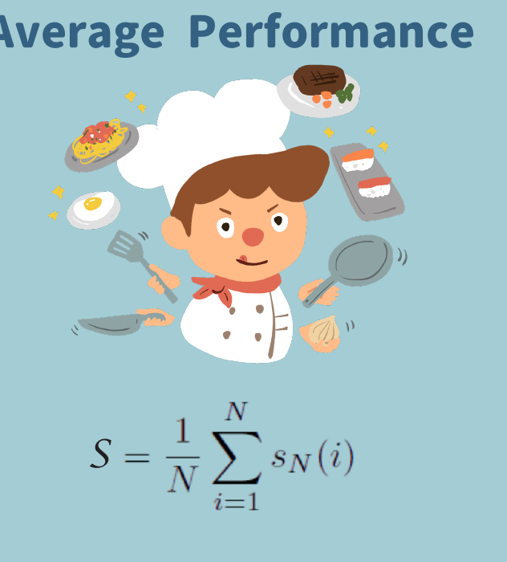
Performance drop on past tasks due to interference from new training. Measures the gap between peak performance right after training a task and final performance after the full sequence.
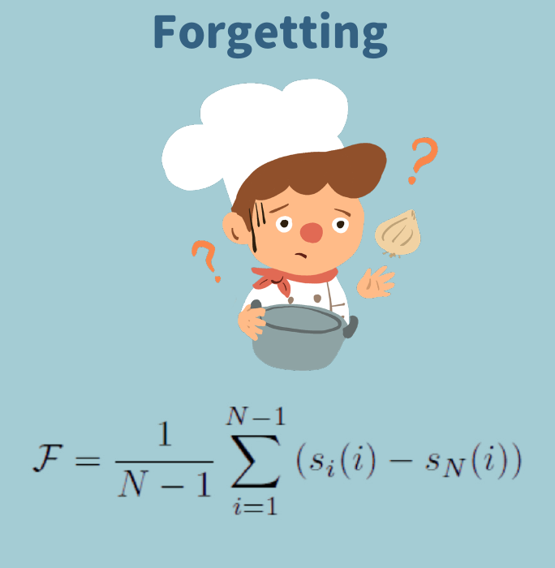
How much prior experience accelerates learning on new tasks. Measured as normalized improvement in area under the learning curve (AUC) over a single-task baseline. Positive means past tasks help; negative means they interfere.
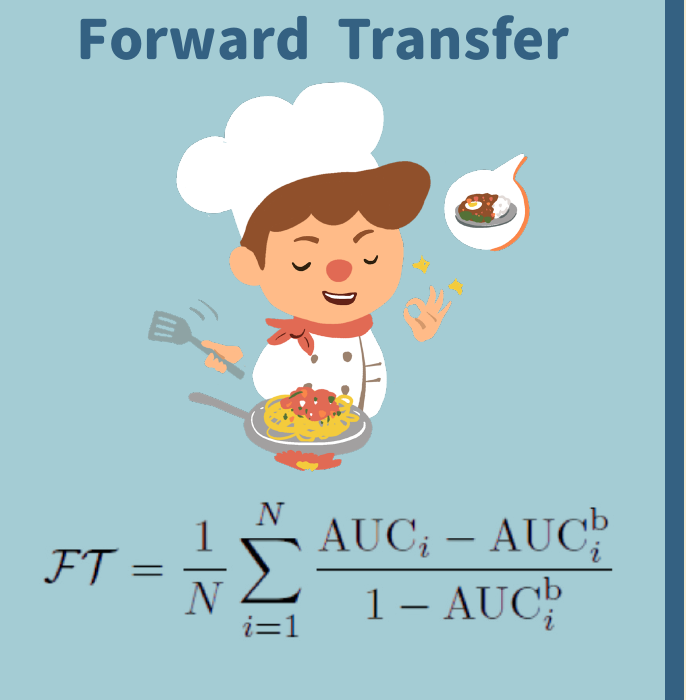
Algorithm choice, team size, difficulty, sequence length, observability, and partner diversity all interact, and their effects only become clear at scale.
Neither the MARL algorithm nor the CL method alone determines performance: the combination is what counts. Some CL methods pair well with IPPO but hurt MAPPO, and vice versa. PackNet consistently achieves high delivery with near-zero forgetting; regularization methods (EWC, MAS) suppress forgetting but impose strongly negative forward transfer.
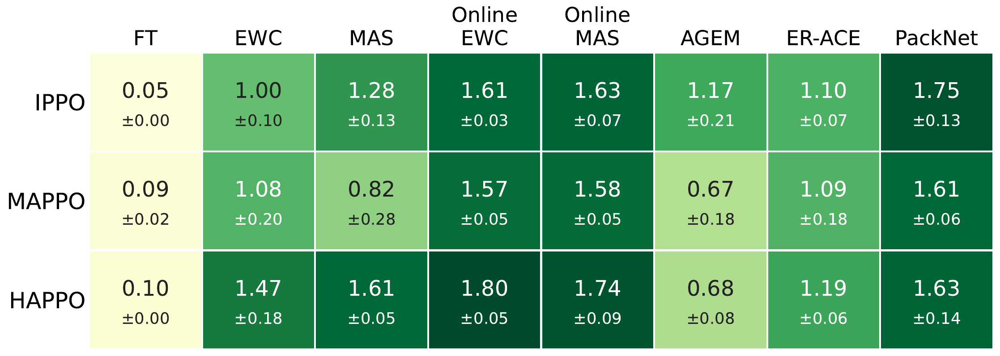
All IPPO-combined CL methods over a 20-task Level 1 sequence. Methods diverge progressively — what looks like a small gap at task 5 becomes a wide spread by task 20, making long sequences essential for meaningful comparison.
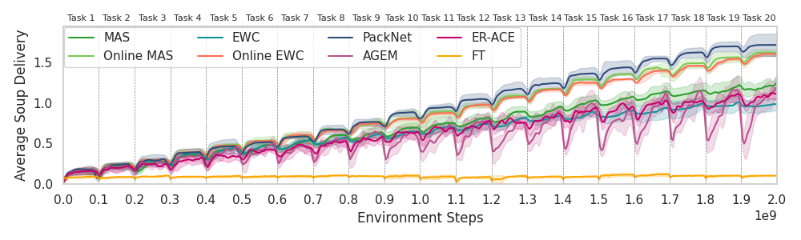
PackNet shows positive forward transfer on most tasks — past training accelerates learning on new kitchens. Methods that over-regularize (EWC, MAS) show negative FT: previous task constraints slow down adaptation to new ones.
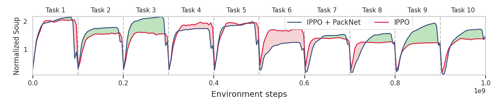
Online EWC maintains high delivery on the current task but shows a sawtooth pattern across earlier ones — each new training cycle interferes with previously learned behaviors. The gap between current and past-task performance widens as the sequence grows.
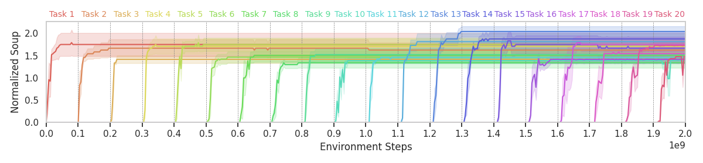
Plotting all methods in the FT vs. forgetting plane reveals a clear trade-off. Regularizers (EWC, MAS, Online MAS) cluster near zero forgetting but show strongly negative forward transfer. AGEM and FT sit at the opposite extreme: plastic but forgetful. PackNet uniquely achieves low forgetting without sacrificing plasticity.
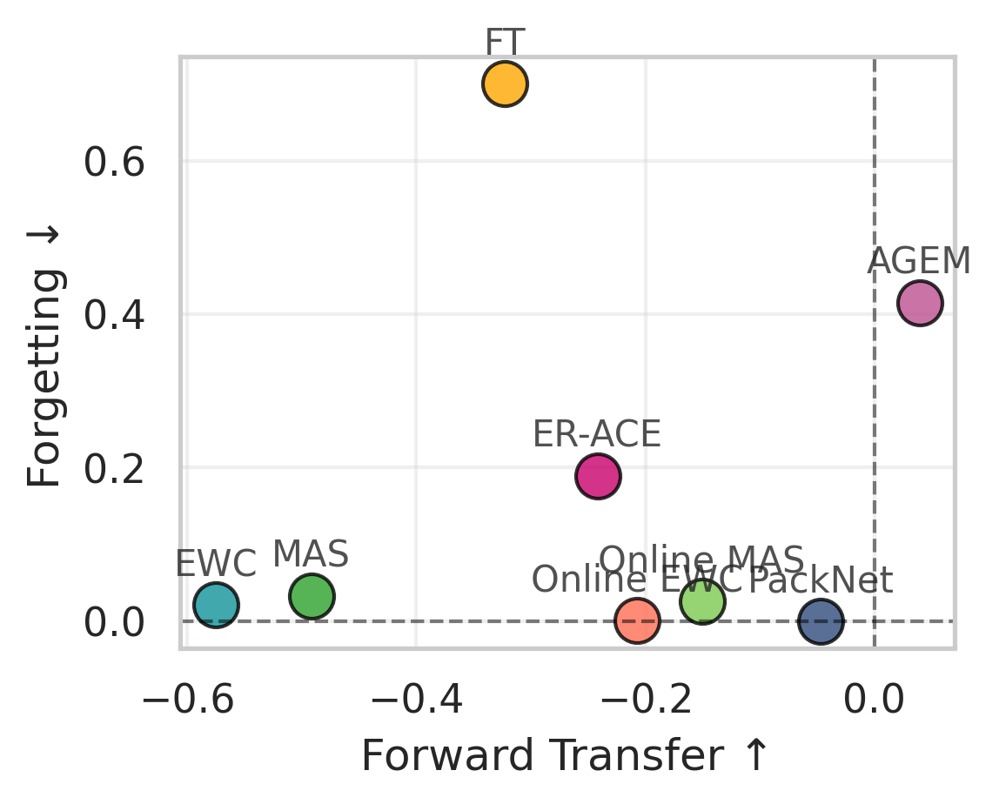
EWC and Online EWC look nearly identical at 5 tasks. Over 100 tasks, standard EWC increasingly over-regularizes the shared backbone, saturating early and losing plasticity, while Online EWC retains capacity through exponentially decaying importance weights. Rankings that appear stable at short horizons can reverse entirely at scale.
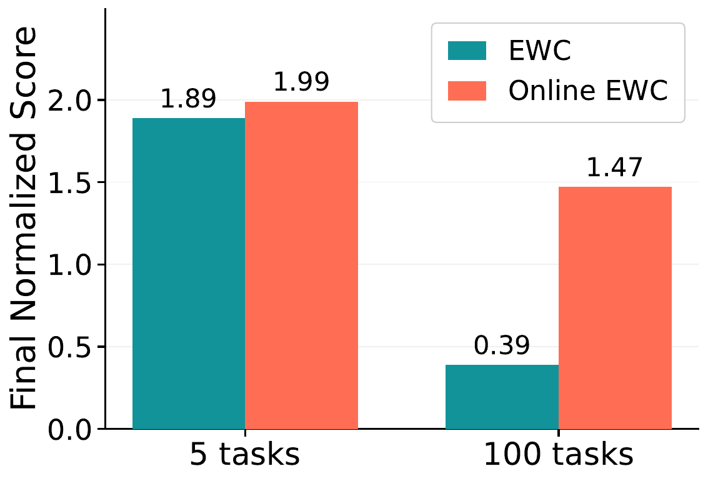
MEAL extends JaxMARL Overcooked to natively support N agents. A second agent enables parallel cooking, pushing throughput well above the solo baseline. Performance peaks at two agents on Level 1 and three on Level 2, then falls as each additional agent enlarges the joint action space and makes continual coordination harder to retain.
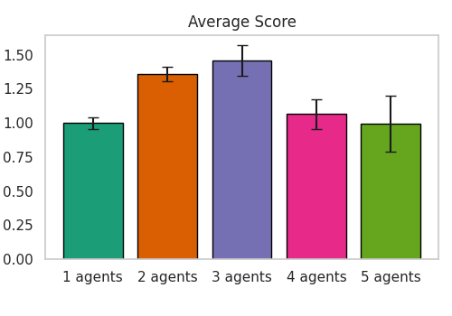
Performance drops substantially from Level 1 to Level 3. Larger grids and denser obstacles lengthen action sequences and demand tighter coordination. At Level 3, most methods struggle to maintain meaningful throughput even in early tasks, and the gap between strong and weak baselines widens with difficulty.
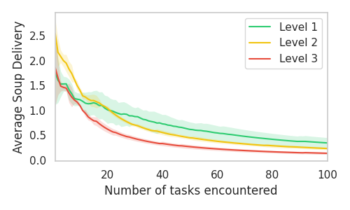
Forgetting accumulates more aggressively on harder levels. The interference between tasks grows as kitchens become larger and more structurally varied — previously learned navigation and coordination strategies are more likely to conflict with new ones, causing faster erosion of past-task performance.
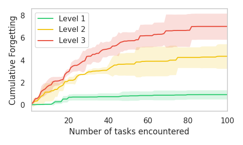
Forward transfer declines as more tasks are trained, indicating the network progressively loses its ability to leverage past experience. Methods with unconstrained weight updates (FT, fine-tuning) show the steepest plasticity loss. PackNet maintains plasticity by partitioning weights per task — new tasks always get fresh capacity and are unaffected by earlier regularization.
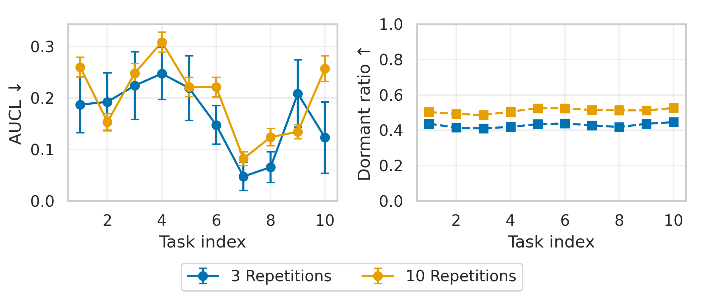
Partial observability lowers delivery by masking distant tiles and destabilizing value targets. Replacing the MLP with a CNN largely recovers this loss, and on Level 2 often surpasses the fully observable baseline. Spatial inductive bias becomes an asset when direct observation of the full grid is unavailable.
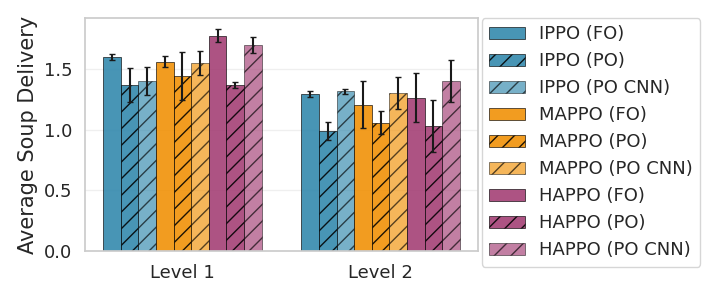
The histogram of per-partner scores reveals a long tail of poor performance for methods without explicit forgetting prevention. CL methods that suppress forgetting yield narrower, higher-scoring distributions, confirming that partner diversity is a genuine non-stationarity challenge distinct from layout changes.
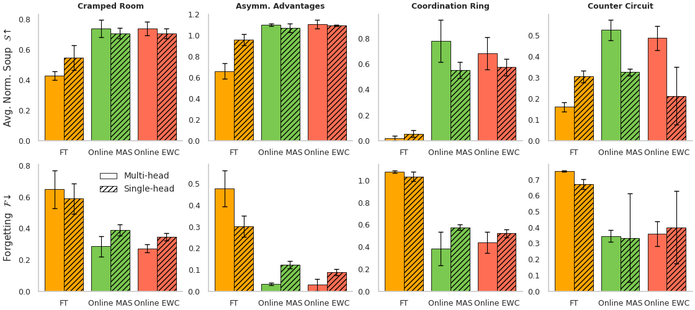